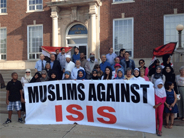
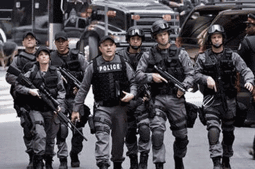
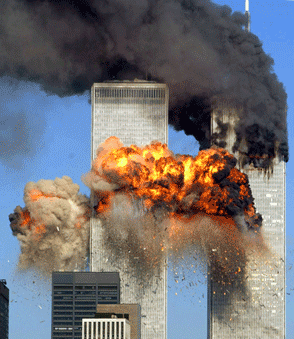

What is Islamophobia?“Islamophobia”, not added to the dictionary yet, is the fear or hatred of Muslims performing Islamic actions. Many people show this type of hatred by spreading their opinions through social media networking sites, entertainment, or through a simple daily lifestyle. This prevents and creates difficulties for Muslims to perform daily routines and essential tasks.  Islamic Discrimination in Day-to-Day LifeMany researchers have focused specifically on this type of discrimination and have come to similar conclusions. For example, Amnesty’s international expert, Marco Perolini, states that, “Muslim women are being denied jobs and girls prevented from attending regular classes just because they wear traditional forms of dress, such as the headscarf.” "Every Muslim family in the world that travels internationally is at risk of facing discrimination," says Asma Jahangir, an award-winning human rights activist currently working for the UN. Dr. Nabil Khattab and Professor Ron Johnston decided to conduct a survey in late October, 2014, where their results concluded that Muslims have a smaller chance at job opportunities than people of other religions. This survey focused on more than half a million people. Since the 9/11 attacks, many people’s perception on Islamic views have changed and stayed that way. However, many voices of Muslims fighting against this discrimination are not being heard. ISIS (Islamic State of Iraq and Syria) is an international terrorist group, recognized by the UN. Numerous terrorist attacks created by ISIS has left many people to believe that all Muslims support ISIS. Muslim clergy in Iraq have distributed a religious command to more than 50,000 mosques to declare that ISIS was a non-Islamic terrorist group. More than 80 Muslim scholars commanded the UN to punish ISIS for their brutality. 
Sources: |


What is terrorism anyway?The definition of terrorism used by the Global Terrorism Index is: “the threatened or actual use of illegal force and violence by a non-state actor to attain a political, economic, religious or social goal through fear, coercion, or intimidation”. International Terrorism in GeneralCanada is and the United States are currently establishing methods to stop the problems of international terrorism. Canada has been working with the United Nations for 20 years to stop harm to its citizens by preventing untrusted groups to take advantage of Canada’s open and inclusive society. In 2013, 17,958 people passed away in terrorist attacks. The following countries hold 82% of the world’s deaths due to terrorism: Deaths due to international terrorism have increased by 61% between 2012 and 2013. How Terrorism StartedThe events of September 11, 2001 has raised awareness of the importance of protecting the borders of countries and dealing with international terrorism issues. However, international terrorism has begun before many of us may have thought. From 1979-1989, Soviet-led Afghanistan’s army fought against multi-national groups called Mujahideen. This war has led to a massive increase of Islamic-related terrorist attacks. Terrorist attacks have occurred more often in countries with unequal and undesired human rights and violations. Experts have studied the major factors of terrorism, including the lack of human rights, abuse, religious and ethnic tensions, and extrajudicial killings.
 |